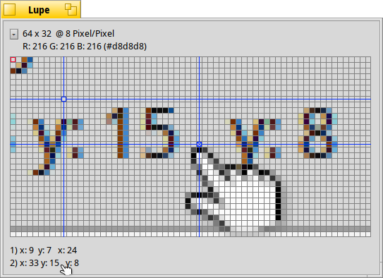

Magnify
Magnify
| Deskbar: | ||
| Ort: | /boot/system/apps/Magnify | |
| Einstellungen: | ~/config/settings/Magnify_prefs |
Magnify stellt den Bildschirmbereich unter dem Mauszeiger vergrößert dar.
Oben im Fenster stehen die Größe des angezeigten Bereichs und der Vergrößerungsgrad. "64 x 32 @ 8 Pixel/Pixel" bedeutet, man sieht einen 64 x 32 Pixel großen Bereich unter dem Mauszeiger und jedes Pixel ist um den Faktor 8 vergrößert.
Darunter ist die Farbe des Pixels angegeben, der rot umrandet dargestellt ist. Sie wird nach dem RGB-Schema und in HEX angegeben.
Die rote Umrandung kann mit ← / → / ↑ / ↓ verschoben werden.
Zum Ausrichten und Messen von Entfernungen können bis zu zwei blaue Fadenkreuze mittels ALT H angezeigt werden. Deren X/Y-Koordinaten bezogen auf die linke obere Ecke und - wenn zwei angezeigt werden - die Entfernung der beiden zu einander werden am unteren Rand des Programmfensters angezeigt.
Das jeweils aktivierte, durch ein X markierte der beiden kann mit ← / → / ↑ / ↓ verschoben werden.
Der Mauszeiger kann über die Tastenkombination ALT ← / → / ↑ / ↓ verschoben werden.
Das Popup-Menü oben links bzw. ein Rechtsklick in das Pixelgitter zeigt mehrere Einträge:
| ALT O | Die aktuelle Darstellung wird als PNG Bild gespeichert. | ||
| ALT C | Die aktuelle Darstellung wird in die Ablage kopiert. | ||
| ALT T | Anzeigen zusätzlicher Informationen. | ||
| ALT H | Fügt ein von maximal zwei blauen Fadenkreuzen hinzu. | ||
| ALT SHIFT H | Entfernt das zuletzt hinzugefügte blaue Fadenkreuz. | ||
| ALT G | Blendet ein Gitternetz ein. | ||
| ALT F | Wird die Maus bewegt, ändert sich automatisch der angezeigte Bereich; dies kann hiermit verhindert werden. | ||
| ALT I | Der angezeigte Bildschirmbereich wird bei Mausbewegung aktualisiert, die angezeigten Koordinaten verbleiben jedoch auf ihrem ursprünglichen Wert. | ||
| ALT / | Nach einer manuellen Änderung der Fenstergröße wird hiermit wieder ein quadratischer Darstellungsbereich eingestellt. | ||
| ALT - | Der Darstellungsbereich wird verkleinert. | ||
| ALT + | Der Darstellungsbereich wird vergrößert. | ||
| ALT , | Verringert die Vergrößerung. | ||
| ALT . | Steigert die Vergrößerung. |